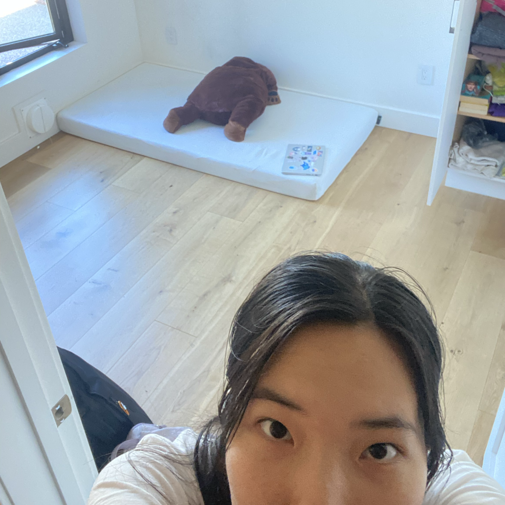
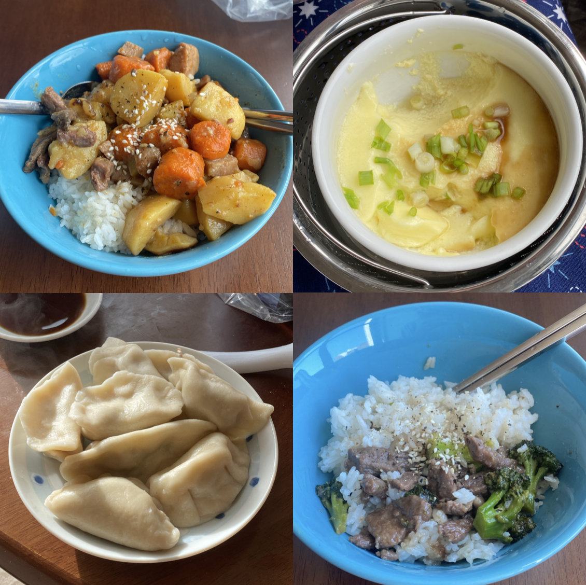
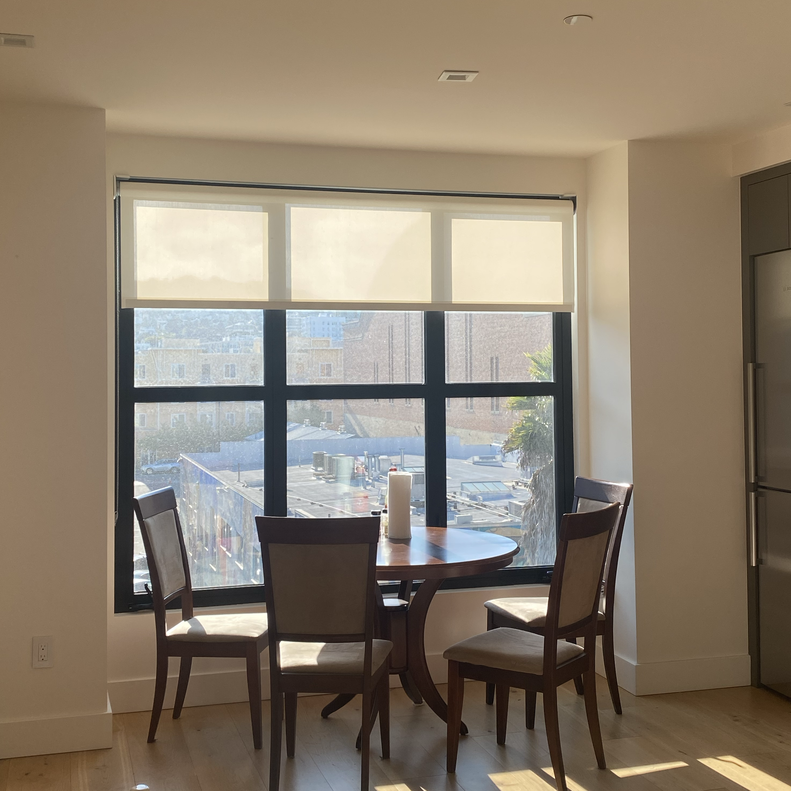
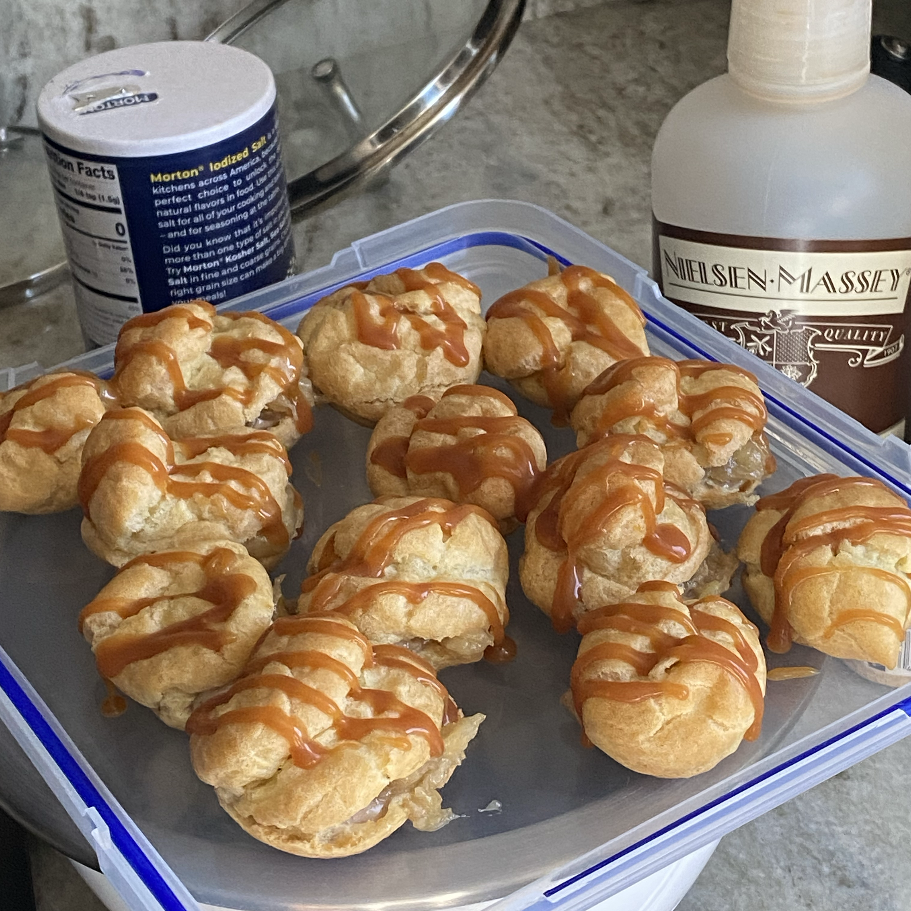

the first three months in san francisco
when you move to the other side of the world, you get a life-changing taste of the most mind-blowing freedom, and you're not quite sure what to do with it. let's take the path less traveled.
living alone(-ish) !

the beginnings of our humble abode <3
almost two months after i land in sf, we finally move in to our own apartment! across two uber trips and many a frantically-packed box (of which some fell apart and some became bleach-soiled), kai ling and i managed to shuffle our stuff 30 minutes down the road into a nice little apartment just over five minutes from the office. it’s wonderful. there's a rooftop. and TWO bathrooms. at a really reasonable price — or, as reasonable as it gets in downtown san francisco.
along with this, of course, comes with so many decisions to make. we stroll down the aisle at the grocery outlet (which one do we go to? the cheapest one...) and ponder shampoo bottles for a good half-hour. then maybe another half-hour on body wash. i end up buying one that has "sea minerals", because apparently i seem to miss the sea. (the section of singapore i lived in had its name originate from 'white sand' in malay.) i belatedly realize that i have ocean scented perfume in my bag, and that i also just placed an amazon order for a sea-themed bathroom mat. what?
we unpack the boxes, install wifi, set up electricity and gas. i remember to pay rent on time. i thought adulting would be a gradual realisation of how far i've come — but really, adulting is buying renter’s insurance & writing your roommate as your 'significant other' because it's twice as cheap that way.
kai ling and i joke about this being our “bto”: a singaporean experience where, once you feel stable enough in a long-term romantic relationship, you can apply for government housing on basis of being a couple. specifically, the independence and the adult-ness you feel when you move into your new apartment with your partner after years of waiting for the flats, and you feel like you made it in life. and that you finally graduated from being a kid in school. bto, built to order.

we make lots of yummy food hehe
moving into our apartment almost felt like that, but we viewed our apartment and signed the lease the next day... san francisco moves fast.
but the mundane: mostly we just cook at home every day and then spend all our money on rent and/or the thrift store. we run through eggs really fast. we travel more than i thought we would, though some trips are more impromptu than others. (we flew for chicago in august for like three days. it was pretty fun. shoutout to acon, alexren, annabel, ben, and paolo. and rhys — thank you rhys!)
the freedom is dizzying. a conversation with thomas made me think about what else is possible. if i really wanted to, i could probably find a job somewhere after gap year and move to chicago or sydney or toronto or whatever and not go to college. i could probably do anything i want. that is terrifying. (but i will probably go to college. and everything is a visa problem. but there's always a what if.)
a 'just cause'

our dining table that kai ling and i carried down the street from the thrift store. it has gorgeous lighting.
in early september i gradually began to realise that i was lacking some form of fulfilment in some of the work that i was doing, and at our dining table by the window, i also realised that in times of uncertainty, i like to turn towards even more 'uncertain' things — i mean i like to look at astrology and tarot. i researched them a couple years back and they've occupied a permanent spot in my head ever since because i was impressed by how much sense they made for me.
the typical aries is hot-headed, quick to anger, ambitious, maybe even abrasive. younger me read descriptions of arieses and thought myself as not particularly aries-y. i then had years to learn more about astrology, and, importantly, more about myself. being an aries isn't so much the outward expression as it is the inner core of what drives you to keep going.
particularly, i love relentlessly chasing a goal — i feel most fulfilled when i know what i’m aiming towards and am actively working towards it. i need a direction and a hope. that’s what keeps arieses going, and i have come to realise that that's what keeps me going, too. i need to remember why i'm doing something beyond just 'for fun'.
a friend recommended that i read the infinite game by simon sinek a couple of months back and i greatly enjoyed it, and in the duration that i was reading it, i have talked the ear off anyone around me who was willing to listen. the book describes how leadership of organizations direct their members — either toward a finite goal, like revenue numbers or 'being better than X company', something that has a distinct end, a win condition — or an infinite goal: something so large and impossible, something so much greater than yourself that you can unite a whole team of people to rally for.
nobody is moved to hit numbers. and once you hit the numbers, the goal is achieved — where do you go next? the book argues that only by playing an infinite game instead of a finite one can you create a long-term vision that's sustainable. that's when you can gather a team of people to work for a cause that outlasts just you. that's when you create something meaningful. simon sinek calls it a just cause.
i found it a really inspiring read, and even though it's geared towards organizations, i'm trying to figure out what my personal just cause is. i think i vaguely have a direction, but i don't think i've got it down yet. i'll keep looking.
the world is huge...

the product of a bake-off between me and olive vs renran and kai ling. unfortunately i did not get a photo of the other team's pumpkin cheesecake.
everyone whom i've met in and out of hack club has been so inspiring. every single person just has extremely in-depth knowledge on a field that is entirely outside of my perception, and when i talk to them it feels like my world expands a little bit. in vermont — we sit at renran's rooftop / olive's kitchen / reem's sofa / hq after the sun has set and just talk endlessly about almost everything. some productive, some insightful, some nonsense. it's incredible just how big the world is. each person has their own path that they're traveling down.
i occasionally open reddit and check r/sgexams. it used to be a major source of my entertainment during exam periods — it's where singaporean students post about their middle/high school rants and complaints and the rare romantic shenanigans (which were limited to weekends only, and were so so entertaining). the posts are getting more pessimistic as nov/dec draws closer and major exams loom around the corner. i read it with a bittersweet semi-fondness, a tinge of horror, and i feel sad.
they are so caught up in their stress bubble — like i once was, too!
when we were in school, some teachers tried really hard to tell us that exams were not so important, and i knew to some extent that it was true. but when you're in the bubble — when you're in the arena, so aptly illustrated in this panel that i stumbled upon during a levels season and had made me tear up — it's so hard to even breathe among the grades and numbers. it's so hard to see beyond.
you couldn't pay me to go back in. (well maybe you could if it were a huge sum of money.) what i mean is that i'm grateful to be out, and even though this newfound independence and work at hack club has plenty of ups and downs, it's so, so freeing.
the world is so much bigger than i thought it was. it's magical.